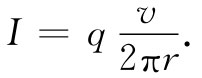
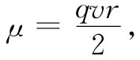
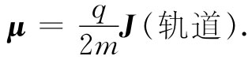
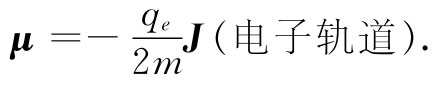
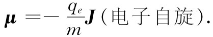
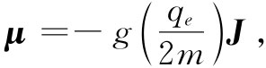
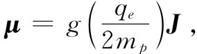

我们所要证明的第一个来自经典力学方面的定理如下：如果电子在一个圆周轨道上运动（比方，在有心力的影响下绕核旋转），则磁矩与角动量间存在一个确定的比率。对于在轨道上运动的电子，让我们称它的角动量为J，磁矩为μ。角动量的大小就是电子质量乘上速度再乘以半径（见图34-2），它的方向与轨道的平面垂直，
J=mvr （34.1）
（当然，这是一个非相对论性的公式，但它对于原子却是一种很好近似，因为对于电子所涉及的v/c值一般为e2 /ћc=1/137或约1%的数量级）。
图34-2 对任一圆周轨道，磁矩μ为q/2m乘角动量J
相同轨道的磁矩是电流乘以面积（见§14-5），电流等于单位时间通过轨道上任一点的电量，也即电荷q乘以转动频率，因为频率等于速度除以轨道的周长，所以

]p0因面积为πr2 ，所以磁矩为
 （34.2）
它也指向与轨道平面垂直的方向，所以J与μ处在相同的方向：
 （34.3）
它们间的比率与速度和半径都无关。对于任何在圆周轨道上运动的粒子，其磁矩等于角动量的q/（2m）倍。对于一个电子来说，电荷是负的——我们把它叫做-qe ，因而有
 （34.4）
那是我们按照经典理论所预期的，但相当奇怪，它在量子力学中却仍然正确。它属于这类事情中的一件。可是，若你继续应用经典物理，你就会发现在其他一些地方，从它得出来的答案乃是错误的，因而试图记住哪些是对的与哪些是错的将是一场大的游戏。我们也许可以立刻向你们提供在量子力学中一般 是正确的东西。首先，式（34.4）对轨道运动 是正确的，但那并不是唯一存在的磁性。电子还有对其本身的轴自旋的运动（有点像地球绕地轴的转动），而作为自旋的结果它同时具有角动量和磁矩。但由于纯粹是量子力学方面的原因——并没有经典方面的解释——所以关于电子自旋的μ与J的比率是该自旋电子的轨道运动的二倍，即
 （34.5）
一般说来，在任何原子中既有几个电子，又有关于自旋和轨道运动的某种结合，从而造成一个总角动量和一个总磁矩。尽管没有经典方面的理由可以说明为什么会这样，但在量子力学中却始终正确 ，即（对于一个孤立原子）磁矩的方向恰好与角动量的方向相反。这两者之间的比率不一定为-qe /m或者为-qe /（2m），而是介乎这两值之间，因为有来自轨道和自旋两方面贡献的混合。我们可以写成
 （34.6）
式中g是标志原子状态的一个因子，对于纯轨道矩它应该为1，对于纯自旋矩它应该是2，若对于一个像原子那样的复杂系统，则g应该处于1与2之间的其他某个数值。当然，这一公式并不会告诉我们很多东西，它只是说磁矩平行 于角动量，但可以有任意的大小。然而，式（34.6）的形式却很方便，因为被称作“朗德g因子”的这个g是一个大小为1的量级的无量纲常数。量子力学的任务之一就是对任何特定的原子态预言这个g因子。
你或许也会对核里发生的情况感兴趣。在核里存在着质子和中子，它们可能在某种轨道上绕行，而同时，像电子一样，也具有内禀自旋。磁矩再度平行于角动量。对于绕圆周运动的质子 来说，只有现在这两者之比的数量级才是你可能想到的，即式（34.3）中的m应等于质子 质量。因此对于核来说经常写成
 （34.7）
式中mp 为质子质量，而g称为核的 g因子，是一个接近于1的常数，对每一种核要分别加以测定。
关于核的另一个重要差别就是质子的自旋 磁矩并不 像电子那样具有一个等于2的g因子。对于质子而言，g=2（2.79）。非常奇怪，中子 也有自旋磁矩，而此磁矩相对于其角动量则为2（-1.93）。换句话说，在磁的意义上，中子并不严格表现“中性”，它好像是个小磁体，而且具有一个旋转着的负 电荷才会有的那种磁矩。